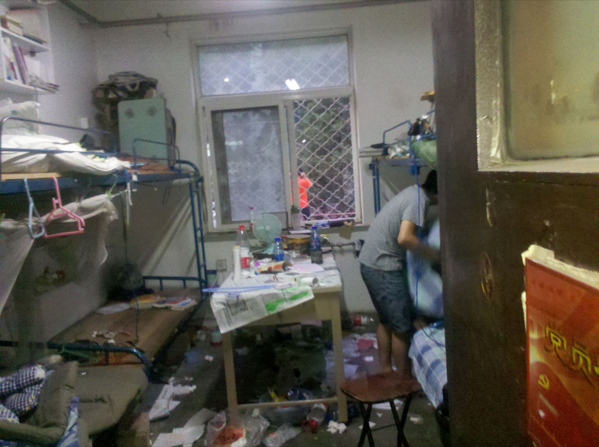

关于116
谨以此文献给陪伴我度过4年青春的兄弟们。
116是我曾经的宿舍号码。具体位置是北航17号学生公寓116宿舍。而现在已经不是了。我本来有5位室友，很可惜后来变成了4位，不过无伤大雅。下面我要分别谈一谈这4个高矮不一，胖瘦不均，性格迥异，但同睡一屋的男人。
具，这是一个发音短促、铿锵有力的称呼，如此漂亮的外号当然源于我的灵感，因他姓王名阳，我认为将一个“具”字紧随其名后，方能诠释完整，死而无憾。后来由于全称过于露骨，而使用简称，这也使得很多不明真相者感到晦涩难懂，但同样为其霸气而折服。这是我所见过的踢球最好的同学，没有之一，长途奔袭，盘球过人，能传能带，就是射门腿软。后来由于长期作息不规，生活堕落，导致意识模糊，体力下降，十分可惜。作为室长，具很称职，主动打扫卫生，令人感动；为了一己私利跟楼管撒娇卖萌，无畏献身，换得通宵供电的福利，也是应该做的。具乃性情中人，洒脱，是具让我爱上了伍佰那沧桑的嗓音，破败的形象。远赴天府之国，必不能怂，保持勃起。
日哥，大名张日亮，我也不知道为何刚开始清新如“亮仔”的代号变成了如今简单粗暴、顶礼膜拜式的尊称。我想这与其暴力的言语，饥渴的内心，强壮的身体，简单的思维是密不可分的。当然，敢于打破常规不顾世俗而首次改用更为贴切的“日哥”来呼唤他的，非鄙人莫属。日哥是一名出色的原创歌手，曲风多变，毫无定数，词曲全都依赖于当时的心情，时而说唱，时而长啸。日哥的歌声响彻云霄，冠绝古今，永远值得我们怀念。当某次日哥又一次嘹亮地发声时，我听到了楼道中有幸路过聆听到天籁的听众们由衷地赞叹道：“我操。”日哥的牌技十分了得，用其自己的话说：“技术好，智商高，手气棒，胆子大。”所以能赢钱，无解。不过最深刻的记忆当属日哥叱咤于三国杀场上的慷慨激昂，无尽的咆哮，人送美名“张日飞”。日哥手牌总是以“杀”居多，惯用武将以张飞为喜，因而练就了一身铁血无情，一轮秒人，无人能挡，气势逼人的真本事。显然，位于进攻力如此变态的选手两侧是非常危险的事情，不得不诚惶诚恐，低三下四，百般告饶。我们都在期望日哥某日能实现理想，执政掌权，统军建国，国号“大日帝国”。
凯子，这个称呼没什么特别的，算是我们之中最为文明和正常的了，顶多也就是大肥子凯，因其小腹微微隆起，乳沟隐隐若现。不过还是抵不住美食的诱惑，与我同去西门次数最多的人。凯子大头大脑，看上去有些学问。事实上也是勤于思考，富有主见，思想深刻，能说会道，指点江山，针砭时弊。凯子尽管身形不高，在我眼里与1米66的具和日哥同属一个阶层，但拥有山东人的豪迈和真诚，义薄云天，有求必应，且大肚能容，酒量上佳，有史以来未见过其醉倒不省人事。每每沾酒上脸，但总能顶着红脸粗脖子坚挺到最后一刻，豪放，不细腻。细腻的话早就告别单身了。经历过数次并肩浴血奋战后，现在竟得意忘形萌生反骨意与具一决雌雄。
洗神，其实我更愿意叫他屌神，虽有不雅，但名副其实。这个名称的起源和发展也是由我一手策划的，但推广和衍生就不在我的可控范围内了。在大学后半段，不得不说洗神是躺中次数最多的人，甚至有些被妖魔化的成分。经常我们的话题会不知不觉间就转移到了洗神的身体上，具体什么部位前文已有所述。可是很多情况下，我们并不是一开始就恶俗了，而是抱着美好的初衷，例如解决一些宏观的、大规模的甚至全人类的难题。洗神单纯善良，细腻婉约，心存高远，志在天涯。只希望情窦初开的他能勇敢把妹，告别搞基。
同样值得纪念的还有所有来过116宿舍的人们：邻居，楼管，咱爸，咱妈，男生，女生。我们去到新的环境难免不适应，因此甚是怀念那份固有的习惯。不过，也愿我们能在新的生活中早日扬名立万，苟富贵，无相忘。
2008年9月19日上午第一次走进17楼走进116的情景依然历历在目，很可惜当时没有记录下。但当昨天我们一起离开的时候，我最后不舍地凝望了它一会儿。
